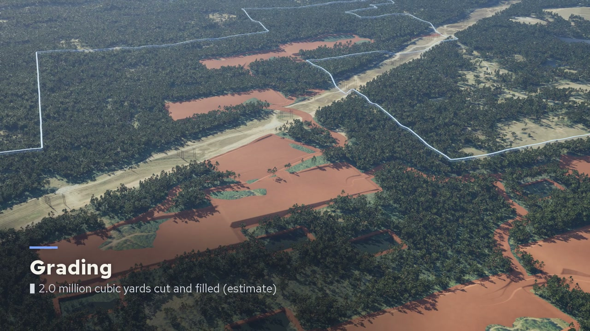
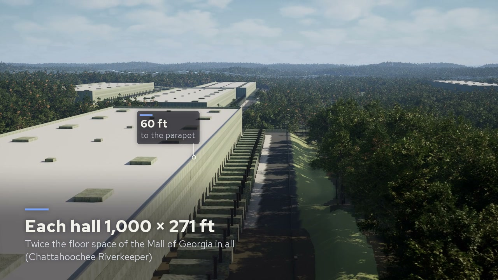
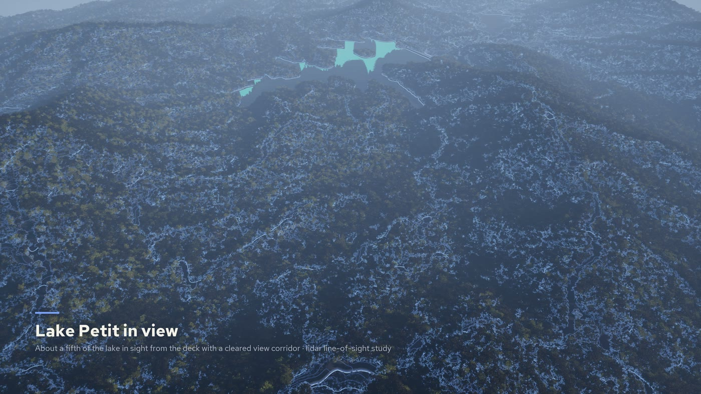

Your land, shown and measured.
Films of large tracts and the projects planned for them, built on the real ground from public lidar and aerial photos. For land and timber investors, developers of communities, commercial and industrial sites, and large projects such as data centers.
The films and frames on this page are studio pieces, made from real listings and public filings.
Send a tract ↓
Three kinds of land.
Each film is built for the decision it has to support: an investment, an approval or a sale.
Timber and investment tracts
For funds, owners and the brokers who sell for them. The tract outlined, its tree cover by type, road frontage and access, water, and a division drawn from your survey or labelled as a concept.
A tract can stay anonymous, with your brand and your disclosures on screen as you wrote them.
Communities, commercial and industrial sites
For developers and builders. The site as it stands today, then cleared, graded and built out to scale on the real ground: roads, pads, buildings and phases.
Data centers and other large projects
For developers, and for the hearings a project has to pass. The campus rises in phase order beside the power lines and creeks that are really there.
The film gives the earth moved, the acres cleared and what can be seen from the road, measured through the real trees, then pulls back to show the distance to power, highways and towns.
A data center campus, start to finish.
Frames from a studio film of a proposed campus in Coweta County, Georgia, made from public filings and public data. The layout is our illustration, not the applicant’s plan, and the film says so on screen.






A proposed data center campus, Coweta County, Georgia. This is a studio film: neither the applicant nor the county commissioned it.
What a drone can’t show.
A drone shows what land looks like today from the air. An investor, a buyer or a planning board needs to know where the line runs, what stands on it, how the ground falls and what a project will look like from the road.



Two films in full.
Eighty seconds each, with sound recorded in the same kind of country. Press play.
We have also made 100+ full-length terrain films for TrailGoat. See them at trailgoat.run ↗ (opens in a new tab)
Where every figure comes from.
Nothing goes on screen that we can’t source. That rule is the product.
The ground and the trees
USGS lidar at one metre. The trees in the film are the ones the lidar measured, at the heights it measured, with the flight date stated.
The property line
Your survey when you send one. Otherwise the county’s parcel map, labelled “boundaries approximate (county GIS, not a survey)” whenever the line or the acreage is on screen.
What can be seen
A line-of-sight study through the real tree canopy, from the road or from any point on the land. On the campus above, bare ground suggested a roof would show from three in four of the 1,256 road points within a mile. Through the trees that stay it was under 1%, and about one in five in a leaf-off worst case. Those figures are for our illustrative layout.
Earth moved and land cleared
Cut, fill and acres disturbed are worked out from the lidar ground and the layout on screen. They describe that layout. They are not an engineer’s design.
Anything not built yet
Buildings, roads or a division of lots that do not exist yet are labelled a concept, or illustrative, for as long as they are on screen.
Send a tract.
Parcel IDs, a survey or a site plan is enough. We check the land against the public records and tell you what the film can show before you commit.
You receive the film in 16:9, a cut for social and stills, with your brand on it if you want it there.
Tracts and timber
Quoted by acreage and what the film has to show.
Development sites, data centers and large projects
Quoted. A longer film with the build-out, the measurements and the regional view.
A single lot
$950. One lot or homesite, about 80 seconds, with a vertical cut and six stills.
Good questions.
How long does a film take?+
About a week for a single tract, from the parcel to a reviewed film. Most of that is checking the facts and your review. A development or a campus with a build-out takes longer, and we agree the timing before we start.
How accurate is it?+
The ground comes from USGS lidar at one metre and the trees are the real ones the lidar measured. Property lines come from the county’s parcel map, which is approximate and not a survey, unless you send your survey. Every figure carries the date of its data. A film is an illustration: it is not a survey, a timber cruise or an appraisal.
What if the county’s lines disagree with our records?+
It happens. We draw from your survey when you send one. Otherwise we use the county’s parcel map, quote your acreage, say that boundaries are approximate and ask you before going further if the difference is large.
Can it show what is not built yet?+
Yes. Buildings, roads and a division of lots that do not exist yet are labelled a concept, or illustrative, for every second they are on screen. If you send the real plan we build from it. If the layout is ours, the film says so.
Can the location stay confidential?+
Yes. The tract itself stays real, but place names, road names and landmarks are left out, the surroundings are generalized so they cannot be matched to a map, and location data is stripped from the files. The tract’s own outline is real, so someone who already knows the property could recognize it.
Can it carry our brand and disclosures?+
Yes. Your name, logo and colours go on the film, and any disclosure text goes on screen word for word. We do not review legal or securities compliance; that is for your counsel.
Can I use it on the MLS?+
MLS rules on rendered media differ from one system to the next. We check your MLS’s rules with you and, where they allow it, prepare a version for it with every rendered element labelled.
Who owns the film?+
You do. We show it as an example of our work only if you agree.
say hi
Let’s make
an impression.
Tell us what you want your business to know, do or see, or the land you want to show. The first conversation is free.
Book a free consultationImagination. Made tangible.